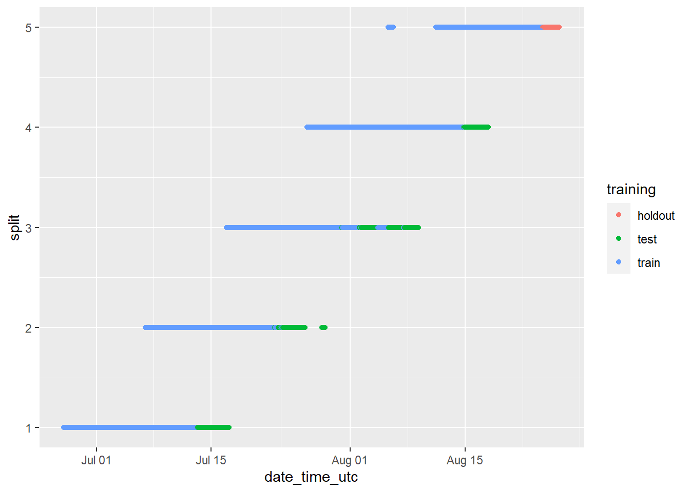
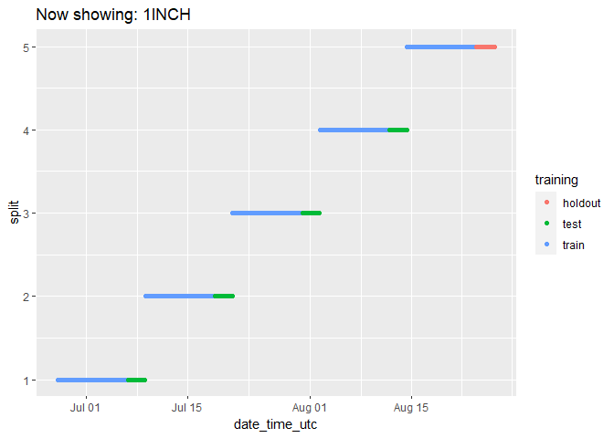
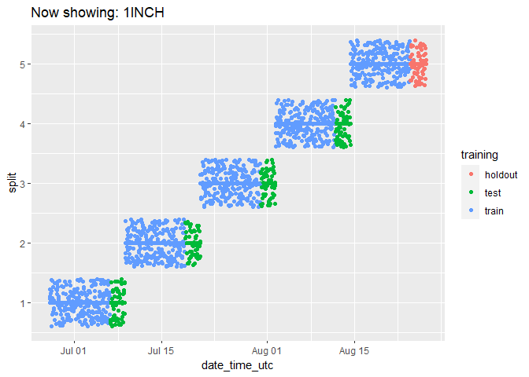

Section - 4 Data Prep
[ADD HERE]
4.1 Remove Nulls
[ADD HERE]
(because we can’t do anything without ask_1_price or date_time_utc at the very least being there)
Remove any rows where the ask_1_price is Null:
cryptodata <- cryptodata[!is.na(cryptodata$ask_1_price), ]And when the date_time_utc is Null:
cryptodata <- cryptodata[!is.na(cryptodata$date_time_utc), ]4.2 Calculate price_usd Column
[ADD HERE]
Calculate the price_usd using the order books data and taking the cheapest price available from the ask side where at least $15 worth of the cryptocurrency are being sold.
[ADD HERE]
cryptodata <- mutate(cryptodata,
trade_usd_1 = ask_1_price * ask_1_quantity,
trade_usd_2 = ask_2_price * ask_2_quantity,
trade_usd_3 = ask_3_price * ask_3_quantity,
trade_usd_4 = ask_4_price * ask_4_quantity,
trade_usd_5 = ask_5_price * ask_5_quantity)We can look at an example [ADD HERE]
head(select(cryptodata, symbol, date_time_utc, ask_1_price, ask_1_quantity, trade_usd_1))## [90m# A tibble: 6 x 5[39m
## symbol date_time_utc ask_1_price ask_1_quantity trade_usd_1
## [3m[90m<chr>[39m[23m [3m[90m<dttm>[39m[23m [3m[90m<dbl>[39m[23m [3m[90m<dbl>[39m[23m [3m[90m<dbl>[39m[23m
## [90m1[39m BTC 2020-10-27 [90m00:00:00[39m [4m1[24m[4m3[24m053. 0.025[4m3[24m 330.
## [90m2[39m ETH 2020-10-27 [90m00:00:01[39m 393. 0.4 157.
## [90m3[39m EOS 2020-10-27 [90m00:00:01[39m 2.63 600 [4m1[24m577.
## [90m4[39m LTC 2020-10-27 [90m00:00:02[39m 56.8 60 [4m3[24m408.
## [90m5[39m BSV 2020-10-27 [90m00:00:03[39m 174. 0.6 104.
## [90m6[39m ADA 2020-10-27 [90m00:00:04[39m 0.103 775 79.9If none of the top 5 orders on the order book ask side are for at least $15, exclude the row. [ADD HERE]
cryptodata <- mutate(cryptodata,
price_usd = case_when(
cryptodata$trade_usd_1 >= 15 ~ cryptodata$ask_1_price,
cryptodata$trade_usd_2 >= 15 ~ cryptodata$ask_2_price,
cryptodata$trade_usd_3 >= 15 ~ cryptodata$ask_3_price,
cryptodata$trade_usd_4 >= 15 ~ cryptodata$ask_4_price,
cryptodata$trade_usd_5 >= 15 ~ cryptodata$ask_5_price))Now remove rows where we couldn’t find a price above $15 for any of the 5 cheapest orders in the order book.
cryptodata <- na.omit(cryptodata)This step removed 20824 rows on the latest run.
4.3 Clean Data by Group
[ADD HERE]
…group_by() from the dplyr (Wickham et al. 2020) package…
cryptodata <- group_by(cryptodata, symbol)4.3.1 Remove symbols without enough rows
[ADD HERE]
cryptodata <- dplyr::filter(cryptodata, n() >= 700)The number of rows for the cryptodata dataset before the filtering step was 177659 and is now 151000.
4.3.2 Remove symbols without data from the last 3 days
If there was no data collected for a cryptocurrency over the last 3 day period, let’s exclude that asset from the dataset since we are only looking to model data that is currently flowing through the process. If an asset is removed from the exchange (if a project is a scam for example) or is no longer being actively captured by the data collection process, we can’t make new predictions for it, so might as well exclude these ahead of time as well.
cryptodata <- dplyr::filter(cryptodata, max(date) > Sys.Date()-3)The number of rows for the cryptodata dataset before this filtering step was 151000 and is now 110001.
4.4 Calculate Target
[TODO - ADD HERE]
4.4.1 Any gaps?
[TODO - ADD HERE]
4.4.2 Convert to tsibble
… the tsibble package (Wang et al. 2020)…
4.4.2.1 Convert to hourly data and get rid of minutes and seconds
… anytime() from the anytime package (Eddelbuettel 2020)…
cryptodata$ts_index <- anytime(paste0(cryptodata$pkDummy,':00:00')) … distinct() from the dplyr package (Wickham et al. 2020)…
cryptodata <- distinct(cryptodata, symbol, ts_index, .keep_all=TRUE)… as_tsibble() from the tsibble package (Wang et al. 2020)…
cryptodata <- as_tsibble(cryptodata, index=ts_index, key=symbol)4.4.3 Scan gaps
scan_gaps(cryptodata)## [90m# A tsibble: 21,583 x 2 [1h] <UTC>[39m
## [90m# Key: symbol [90][39m
## symbol ts_index
## [3m[90m<chr>[39m[23m [3m[90m<dttm>[39m[23m
## [90m 1[39m ACAT 2020-08-13 [90m22:00:00[39m
## [90m 2[39m ACAT 2020-08-14 [90m20:00:00[39m
## [90m 3[39m ACAT 2020-08-14 [90m21:00:00[39m
## [90m 4[39m ACAT 2020-08-14 [90m22:00:00[39m
## [90m 5[39m ACAT 2020-08-15 [90m01:00:00[39m
## [90m 6[39m ACAT 2020-08-15 [90m02:00:00[39m
## [90m 7[39m ACAT 2020-08-15 [90m03:00:00[39m
## [90m 8[39m ACAT 2020-08-15 [90m04:00:00[39m
## [90m 9[39m ACAT 2020-08-15 [90m05:00:00[39m
## [90m10[39m ACAT 2020-08-15 [90m06:00:00[39m
## [90m# … with 21,573 more rows[39m4.4.4 Fill gaps
cryptodata <- fill_gaps(cryptodata)Now looking at the data again, there are 21583 additional rows that were added as implicitly missing in the data:
cryptodata## [90m# A tsibble: 131,381 x 34 [1h] <UTC>[39m
## [90m# Key: symbol [90][39m
## [90m# Groups: symbol [90][39m
## pair symbol quote_currency ask_1_price ask_1_quantity ask_2_price
## [3m[90m<chr>[39m[23m [3m[90m<chr>[39m[23m [3m[90m<chr>[39m[23m [3m[90m<dbl>[39m[23m [3m[90m<dbl>[39m[23m [3m[90m<dbl>[39m[23m
## [90m 1[39m ACAT… ACAT USD 0.000[4m1[24m[4m9[24m [4m1[24m[4m1[24m[4m8[24m300 0.000[4m2[24m[4m2[24m
## [90m 2[39m ACAT… ACAT USD 0.000[4m1[24m[4m9[24m [4m1[24m[4m1[24m[4m8[24m300 0.000[4m2[24m[4m2[24m
## [90m 3[39m ACAT… ACAT USD 0.000[4m1[24m[4m9[24m [4m1[24m[4m1[24m[4m8[24m300 0.000[4m2[24m[4m2[24m
## [90m 4[39m ACAT… ACAT USD 0.000[4m1[24m[4m9[24m [4m1[24m[4m1[24m[4m8[24m300 0.000[4m2[24m[4m2[24m
## [90m 5[39m ACAT… ACAT USD 0.000[4m1[24m[4m9[24m [4m1[24m[4m1[24m[4m8[24m300 0.000[4m2[24m[4m2[24m
## [90m 6[39m ACAT… ACAT USD 0.000[4m1[24m[4m9[24m [4m1[24m[4m1[24m[4m8[24m300 0.000[4m2[24m[4m2[24m
## [90m 7[39m ACAT… ACAT USD 0.000[4m1[24m[4m9[24m [4m1[24m[4m1[24m[4m8[24m300 0.000[4m2[24m[4m2[24m
## [90m 8[39m ACAT… ACAT USD 0.000[4m1[24m[4m9[24m [4m1[24m[4m1[24m[4m8[24m300 0.000[4m2[24m[4m2[24m
## [90m 9[39m ACAT… ACAT USD 0.000[4m1[24m[4m9[24m [4m1[24m[4m1[24m[4m8[24m300 0.000[4m2[24m[4m2[24m
## [90m10[39m ACAT… ACAT USD 0.000[4m1[24m[4m9[24m [4m1[24m[4m1[24m[4m8[24m300 0.000[4m2[24m[4m2[24m
## [90m# … with 131,371 more rows, and 28 more variables: ask_2_quantity [3m[90m<dbl>[90m[23m,[39m
## [90m# ask_3_price [3m[90m<dbl>[90m[23m, ask_3_quantity [3m[90m<dbl>[90m[23m, ask_4_price [3m[90m<dbl>[90m[23m,[39m
## [90m# ask_4_quantity [3m[90m<dbl>[90m[23m, ask_5_price [3m[90m<dbl>[90m[23m, ask_5_quantity [3m[90m<dbl>[90m[23m,[39m
## [90m# bid_1_price [3m[90m<dbl>[90m[23m, bid_1_quantity [3m[90m<dbl>[90m[23m, bid_2_price [3m[90m<dbl>[90m[23m,[39m
## [90m# bid_2_quantity [3m[90m<dbl>[90m[23m, bid_3_price [3m[90m<dbl>[90m[23m, bid_3_quantity [3m[90m<dbl>[90m[23m,[39m
## [90m# bid_4_price [3m[90m<dbl>[90m[23m, bid_4_quantity [3m[90m<dbl>[90m[23m, bid_5_price [3m[90m<dbl>[90m[23m,[39m
## [90m# bid_5_quantity [3m[90m<dbl>[90m[23m, date_time_utc [3m[90m<dttm>[90m[23m, date [3m[90m<date>[90m[23m, pkDummy [3m[90m<chr>[90m[23m,[39m
## [90m# pkey [3m[90m<chr>[90m[23m, trade_usd_1 [3m[90m<dbl>[90m[23m, trade_usd_2 [3m[90m<dbl>[90m[23m, trade_usd_3 [3m[90m<dbl>[90m[23m,[39m
## [90m# trade_usd_4 [3m[90m<dbl>[90m[23m, trade_usd_5 [3m[90m<dbl>[90m[23m, price_usd [3m[90m<dbl>[90m[23m, ts_index [3m[90m<dttm>[90m[23m[39mFor now, let’s convert the data back to a tibble instead of a tsibble:
cryptodata <- group_by(as_tibble(cryptodata), symbol)4.4.5 Calculate Target
[ADD HERE]
Also adding lagged variables here! [ADD HERE]
…mutate() from the dplyr (Wickham et al. 2020) package…
cryptodata <- mutate(cryptodata,
target_price_24h = lead(price_usd, 24, order_by=ts_index),
# Now all the lagged variables:
lagged_price_1h = lag(price_usd, 1, order_by=ts_index),
lagged_price_2h = lag(price_usd, 2, order_by=ts_index),
lagged_price_3h = lag(price_usd, 3, order_by=ts_index),
lagged_price_6h = lag(price_usd, 6, order_by=ts_index),
lagged_price_12h = lag(price_usd, 12, order_by=ts_index),
lagged_price_24h = lag(price_usd, 24, order_by=ts_index))
#lagged_price_3d = lag(price_usd, 24*3, order_by=ts_index),
#lagged_price_7d = lag(price_usd, 24*7, order_by=ts_index),
#lagged_price_14d = lag(price_usd, 24*14, order_by=ts_index),
#lagged_price_31d = lag(price_usd, 24*31, order_by=ts_index))Here is an example showing the results for the subset of data related to the Ethereum cryptocurrency (using symbol == 'ETH') showing 30 rows and the relevant columns we just calculated:
print(select(filter(cryptodata, symbol == 'ETH'),ts_index, price_usd, lagged_price_1h, lagged_price_24h, target_price_24h), n=30)## [90m# A tibble: 1,159 x 6[39m
## [90m# Groups: symbol [1][39m
## symbol ts_index price_usd lagged_price_1h lagged_price_24h
## [3m[90m<chr>[39m[23m [3m[90m<dttm>[39m[23m [3m[90m<dbl>[39m[23m [3m[90m<dbl>[39m[23m [3m[90m<dbl>[39m[23m
## [90m 1[39m ETH 2020-09-09 [90m11:00:00[39m 347. [31mNA[39m [31mNA[39m
## [90m 2[39m ETH 2020-09-09 [90m12:00:00[39m 348. 347. [31mNA[39m
## [90m 3[39m ETH 2020-09-09 [90m13:00:00[39m 347. 348. [31mNA[39m
## [90m 4[39m ETH 2020-09-09 [90m14:00:00[39m 348. 347. [31mNA[39m
## [90m 5[39m ETH 2020-09-09 [90m15:00:00[39m 353. 348. [31mNA[39m
## [90m 6[39m ETH 2020-09-09 [90m16:00:00[39m 353. 353. [31mNA[39m
## [90m 7[39m ETH 2020-09-09 [90m17:00:00[39m 351. 353. [31mNA[39m
## [90m 8[39m ETH 2020-09-09 [90m18:00:00[39m 352. 351. [31mNA[39m
## [90m 9[39m ETH 2020-09-09 [90m19:00:00[39m 359. 352. [31mNA[39m
## [90m10[39m ETH 2020-09-09 [90m20:00:00[39m 356. 359. [31mNA[39m
## [90m11[39m ETH 2020-09-09 [90m21:00:00[39m 353. 356. [31mNA[39m
## [90m12[39m ETH 2020-09-09 [90m22:00:00[39m 353. 353. [31mNA[39m
## [90m13[39m ETH 2020-09-09 [90m23:00:00[39m 355. 353. [31mNA[39m
## [90m14[39m ETH 2020-09-10 [90m00:00:00[39m 351. 355. [31mNA[39m
## [90m15[39m ETH 2020-09-10 [90m01:00:00[39m 355. 351. [31mNA[39m
## [90m16[39m ETH 2020-09-10 [90m02:00:00[39m 368. 355. [31mNA[39m
## [90m17[39m ETH 2020-09-10 [90m03:00:00[39m 367. 368. [31mNA[39m
## [90m18[39m ETH 2020-09-10 [90m04:00:00[39m 371. 367. [31mNA[39m
## [90m19[39m ETH 2020-09-10 [90m05:00:00[39m 373. 371. [31mNA[39m
## [90m20[39m ETH 2020-09-10 [90m06:00:00[39m 370. 373. [31mNA[39m
## [90m21[39m ETH 2020-09-10 [90m07:00:00[39m 367. 370. [31mNA[39m
## [90m22[39m ETH 2020-09-10 [90m08:00:00[39m 363. 367. [31mNA[39m
## [90m23[39m ETH 2020-09-10 [90m09:00:00[39m 364. 363. [31mNA[39m
## [90m24[39m ETH 2020-09-10 [90m10:00:00[39m 365. 364. [31mNA[39m
## [90m25[39m ETH 2020-09-10 [90m11:00:00[39m 363. 365. 347.
## [90m26[39m ETH 2020-09-10 [90m12:00:00[39m 365. 363. 348.
## [90m27[39m ETH 2020-09-10 [90m13:00:00[39m 372. 365. 347.
## [90m28[39m ETH 2020-09-10 [90m14:00:00[39m 377. 372. 348.
## [90m29[39m ETH 2020-09-10 [90m15:00:00[39m 367. 377. 353.
## [90m30[39m ETH 2020-09-10 [90m16:00:00[39m 372. 367. 353.
## [90m# … with 1,129 more rows, and 1 more variable: target_price_24h [3m[90m<dbl>[90m[23m[39mThe field target_price_24h shows the value of price_usd 24 hours into the future relative to the row of data. All the lagged_ fields show the price from the past relative to when the data was collected (where lagged_price_1h shows the price 1 hour before the ts_index timestamp of the data).
4.5 Cross Validation
[ADD HERE]
(explain step below)
NEW CV METHOD - need to explain:
# Remove rows with null date_time_utc to exclude missing data from next steps
cryptodata <- drop_na(cryptodata, date_time_utc)
# Counts by symbol
cryptodata <- cryptodata %>% group_by(symbol) %>% mutate(tot_rows = n())
# Add row index by symbol
cryptodata <- mutate(arrange(cryptodata, date_time_utc), row_id = seq_along(date_time_utc))
# Calculate what rows belong in the first split
cryptodata <- cryptodata %>% mutate(split_rows_1 = as.integer(n()/5),
split_rows_2 = as.integer(split_rows_1*2),
split_rows_3 = as.integer(split_rows_1*3),
split_rows_4 = as.integer(split_rows_1*4),
split_rows_5 = as.integer(split_rows_1*5))
# Now calculate what split the current row_id belongs into
cryptodata <- mutate(cryptodata,
split = case_when(
row_id <= split_rows_1 ~ 1,
row_id <= split_rows_2 ~ 2,
row_id <= split_rows_3 ~ 3,
row_id <= split_rows_4 ~ 4,
row_id > split_rows_4 ~ 5))
# Now figure out train/test groups
cryptodata <- cryptodata %>% mutate(train_rows_1 = (as.integer(n()/5))*0.8,
test_rows_1 = train_rows_1 + (as.integer(n()/5))*0.2,
train_rows_2 = test_rows_1 + train_rows_1,
test_rows_2 = train_rows_2 + (as.integer(n()/5))*0.2,
train_rows_3 = test_rows_2 + train_rows_1,
test_rows_3 = train_rows_3 + (as.integer(n()/5))*0.2,
train_rows_4 = test_rows_3 + train_rows_1,
test_rows_4 = train_rows_4 + (as.integer(n()/5))*0.2,
train_rows_5 = test_rows_4 + train_rows_1,
test_rows_5 = train_rows_5 + (as.integer(n()/5))*0.2)
# Now assign train/test groups
cryptodata <- mutate(cryptodata,
training = case_when(
row_id <= train_rows_1 ~ 'train',
row_id <= test_rows_1 ~ 'test',
row_id <= train_rows_2 ~ 'train',
row_id <= test_rows_2 ~ 'test',
row_id <= train_rows_3 ~ 'train',
row_id <= test_rows_3 ~ 'test',
row_id <= train_rows_4 ~ 'train',
row_id <= test_rows_4 ~ 'test',
row_id <= train_rows_5 ~ 'train',
row_id > train_rows_5 ~ 'holdout'))
# Remove all columns that are no longer needed now
cryptodata <- select(cryptodata, -(tot_rows:test_rows_5), -(trade_usd_1:trade_usd_5),
-(ask_1_price:bid_5_quantity), -pair, -quote_currency,
-pkDummy, -pkey, -ts_index, split)Our data now has the new columns training (train, test or holdout) and split (numbers 1-5) added to it, let’s take a look at the new columns:
select(cryptodata, training, split)## [90m# A tibble: 109,798 x 3[39m
## [90m# Groups: symbol [90][39m
## symbol training split
## [3m[90m<chr>[39m[23m [3m[90m<chr>[39m[23m [3m[90m<dbl>[39m[23m
## [90m 1[39m LEO train 1
## [90m 2[39m GBX train 1
## [90m 3[39m ACT train 1
## [90m 4[39m BTG train 1
## [90m 5[39m ACAT train 1
## [90m 6[39m LINK train 1
## [90m 7[39m VET train 1
## [90m 8[39m IHF train 1
## [90m 9[39m DGB train 1
## [90m10[39m RCN train 1
## [90m# … with 109,788 more rows[39mNotice that even though we left symbol variables out of our selection, because it is part of the way we grouped our data, it was added back in with the message “Adding missing grouping variables symbol”. The data is tied to its groupings when performing all operations until we use ungroup() to undo them.
Let’s add the new split column to the way the data is grouped:
cryptodata <- group_by(cryptodata, symbol, split)The new field split, helps us split the data into 5 different datasets based on the date, and contains a number from 1-5. The new field training flags the data as being part of the train dataset, or the test (or holdout for the first split) dataset for each of the 5 splits/datasets.
Running the same code as before with tail() added, we should see rows associated with the test data of the 5th split (again remember, each of the 5 splits has a training and testing dataset):
tail( select(cryptodata, training, split) )## [90m# A tibble: 6 x 3[39m
## [90m# Groups: symbol, split [6][39m
## symbol training split
## [3m[90m<chr>[39m[23m [3m[90m<chr>[39m[23m [3m[90m<dbl>[39m[23m
## [90m1[39m REP holdout 5
## [90m2[39m BYTZ holdout 5
## [90m3[39m DAY holdout 5
## [90m4[39m NUT holdout 5
## [90m5[39m UTT holdout 5
## [90m6[39m DCN holdout 5The easiest way to understand these groupings, is to visualize them. In the next section, you will learn powerful tools for visualizing data in R. Do not worry if you do not understand the code below and are not familiar with ggplot(), we will explain this framework in the next section, for now review the charts below and try to follow along with the way we are grouping the data for the predictive models by looking at what the x and y axis represent, as well as the colors. On the x-axis we are plotting the DateTime of when a data point was collected, and on the y-axis the split (1-5) as described in this section. The data is then colored based on the category assigned for the training variable (“train”,“test” or “holdout”).
We can visualize the new grouping variables:
groups_chart <- ggplot(cryptodata,
aes(x = date_time_utc, y = split, color = training)) +
geom_point() #+
#scale_y_reverse()
# now show the chart we just saved:
groups_chart
We can check on the groupings for each cryptocurrency by animating the previous chart:
library(gganimate)
animated_chart <- groups_chart +
transition_states(symbol) +
ggtitle('Now showing: {closest_state}')
# show the new animated chart
animate(animated_chart, fps = 2)
If/when need to slow these down, use this code: (can’t change fps from 1 - or at least be careful, it’s error prone) animate(animated_chart, fps = 1)
This is another tool that we will walk through in the next section.
It can be a bit hard to tell how many data points there are because they end up looking like lines. Let’s change the plot to use geom_jitter() instead of geom_point(), which will manually offset the points and let us see exactly how many data points there are:
animated_chart <- animated_chart +
geom_jitter()
# show the new animated chart
animate(animated_chart, fps = 2)
4.6 Fix Data by Split
Now that we have split the data into many different subsets, those subsets themselves may have issues that prevent the predictive models from working as expected.
4.6.1 Zero Variance
One of the first models we will make is a simple linear model. The regular R function for this will not work if the data contains any columns that have “zero variance”, meaning the value of the column never changes throughout the data being given to the model. Therefore, let’s fix any issues relating to zero variance columns in any dataset before we change the structure of the data in the step after this one.
First change the grouping of the data, we are interested in calculating the zero variance based on the symbol, split and training fields.
cryptodata <- group_by(cryptodata, symbol, split, training)Now let’s create a new object called find_zero_var which shows the value of the minimum standard deviation across all columns and calculated based on the grouping of symbol, split and train.
find_zero_var <- select(mutate(cryptodata, min_sd = min(sd(price_usd, na.rm=T),
sd(target_price_24h, na.rm=T),
sd(lagged_price_1h, na.rm=T),
sd(lagged_price_2h, na.rm=T),
sd(lagged_price_3h, na.rm=T),
sd(lagged_price_6h, na.rm=T),
sd(lagged_price_12h, na.rm=T),
sd(lagged_price_24h, na.rm=T))), min_sd)
# Show data
find_zero_var## [90m# A tibble: 109,798 x 4[39m
## [90m# Groups: symbol, split, training [900][39m
## symbol split training min_sd
## [3m[90m<chr>[39m[23m [3m[90m<dbl>[39m[23m [3m[90m<chr>[39m[23m [3m[90m<dbl>[39m[23m
## [90m 1[39m LEO 1 train 0.114
## [90m 2[39m GBX 1 train 0.002[4m5[24m[4m9[24m
## [90m 3[39m ACT 1 train 0.000[4m6[24m[4m5[24m[4m1[24m
## [90m 4[39m BTG 1 train 0.400
## [90m 5[39m ACAT 1 train 0.000[4m0[24m[4m1[24m[4m6[24m3
## [90m 6[39m LINK 1 train 2.04
## [90m 7[39m VET 1 train 0.000[4m8[24m[4m5[24m[4m4[24m
## [90m 8[39m IHF 1 train 0.003[4m2[24m[4m7[24m
## [90m 9[39m DGB 1 train 0.002[4m0[24m[4m3[24m
## [90m10[39m RCN 1 train 0.014[4m0[24m
## [90m# … with 109,788 more rows[39mNow let’s get to a list of cryptocurrency symbols where the minimum standard deviation across all columns for all splits of the data is 0, which is the list of cryptocurrencies to remove from the data.
minimum_sd <- filter(distinct(mutate(group_by(ungroup(find_zero_var), symbol),
min_sd = min(min_sd, na.rm=T)), min_sd),min_sd < 0.000001)$symbol
# Show result
minimum_sd## [1] "LEO" "GBX" "ACT" "ACAT" "PAXG" "DRT" "DENT" "DAY" "IPL"
## [10] "IHT" "CDT" "MESH" "NAV" "CUR" "FDZ" "COCOS" "HTML" "REX"
## [19] "SPC" "OAX" "CND" "DCN" "MG" "SWM" "PHX" "CUTE" "BCN"
## [28] "ELF" "BYTZ" "ZAP" "BNK" "CHAT" "WIKI" "NEU" "ECA" "JST"
## [37] "SEELE"Now we can remove these symbols from appearing in the dataset:
cryptodata <- filter(cryptodata, !(symbol %in% minimum_sd)) In the code above we match all rows where the symbol is part of the minimum_sd object with the list of cryptocurrency symbols to remove from the data, and we then negate the selection using the ! operator to only keep rows with symbols not in the list we found.
4.7 Nest data
[ADD HERE]
… explain goal and method
… First make sure groupings are correct
cryptodata <- group_by(cryptodata, symbol, split, training)Example nesting data:
nest(cryptodata) ## [90m# A tibble: 530 x 4[39m
## [90m# Groups: symbol, training, split [530][39m
## symbol training split data
## [3m[90m<chr>[39m[23m [3m[90m<chr>[39m[23m [3m[90m<dbl>[39m[23m [3m[90m<list>[39m[23m
## [90m 1[39m BTG train 1 [90m<tibble [276 × 10]>[39m
## [90m 2[39m LINK train 1 [90m<tibble [203 × 10]>[39m
## [90m 3[39m VET train 1 [90m<tibble [288 × 10]>[39m
## [90m 4[39m IHF train 1 [90m<tibble [227 × 10]>[39m
## [90m 5[39m DGB train 1 [90m<tibble [300 × 10]>[39m
## [90m 6[39m RCN train 1 [90m<tibble [265 × 10]>[39m
## [90m 7[39m LTC train 1 [90m<tibble [300 × 10]>[39m
## [90m 8[39m NUT train 1 [90m<tibble [284 × 10]>[39m
## [90m 9[39m NEXO train 1 [90m<tibble [298 × 10]>[39m
## [90m10[39m XMR train 1 [90m<tibble [299 × 10]>[39m
## [90m# … with 520 more rows[39mFirst make training data nested:
cryptodata_train <- rename(nest(filter(cryptodata, training=='train')), train_data = 'data')
# Now remove training column
cryptodata_train <- select(ungroup(cryptodata_train, training), -training)
# Fix issues with individual groups of the data
cryptodata_train$train_data <- lapply(cryptodata_train$train_data, na.omit)
# Remove elements with no rows after na.omit step. CONFIRM THIS WORKS!!!
# First add new column with nrow of train dataset
cryptodata_train <- group_by(ungroup(mutate(rowwise(cryptodata_train), train_rows = nrow(train_data))), symbol, split)
# Remove all symbols where their train data has less than 20 rows at least once
symbols_rm <- unique(filter(cryptodata_train, split < 5, train_rows < 20)$symbol)
# Remove all data relating to the symbols found above
cryptodata_train <- filter(cryptodata_train, ! symbol %in% symbols_rm) # ! is to make %not in% operator
# Drop train_rows column
cryptodata_train <- select(cryptodata_train, -train_rows)Now nest test data:
cryptodata_test <- select(rename(nest(filter(cryptodata, training=='test')), test_data = 'data'), -training)
# Now remove training column
cryptodata_test <- select(ungroup(cryptodata_test, training), -training)Also do holdout:
cryptodata_holdout <- rename(nest(filter(cryptodata, training=='holdout')), holdout_data = 'data')
# Remove split and training columns from holdout
cryptodata_holdout <- select(ungroup(cryptodata_holdout, split, training), -split, -training)Now join all nested data into the same dataframe
# Join train and test
cryptodata_nested <- left_join(cryptodata_train, cryptodata_test,by = c("symbol", "split"))
# Join holdout
cryptodata_nested <- left_join(cryptodata_nested, cryptodata_holdout, by = c("symbol"))New data:
cryptodata_nested## [90m# A tibble: 260 x 5[39m
## [90m# Groups: symbol, split [260][39m
## symbol split train_data test_data holdout_data
## [3m[90m<chr>[39m[23m [3m[90m<dbl>[39m[23m [3m[90m<list>[39m[23m [3m[90m<list>[39m[23m [3m[90m<list>[39m[23m
## [90m 1[39m BTG 1 [90m<tibble [239 × 10]>[39m [90m<tibble [70 × 10]>[39m [90m<tibble [71 × 10]>[39m
## [90m 2[39m LINK 1 [90m<tibble [179 × 10]>[39m [90m<tibble [51 × 10]>[39m [90m<tibble [54 × 10]>[39m
## [90m 3[39m VET 1 [90m<tibble [258 × 10]>[39m [90m<tibble [72 × 10]>[39m [90m<tibble [75 × 10]>[39m
## [90m 4[39m IHF 1 [90m<tibble [192 × 10]>[39m [90m<tibble [57 × 10]>[39m [90m<tibble [61 × 10]>[39m
## [90m 5[39m DGB 1 [90m<tibble [276 × 10]>[39m [90m<tibble [75 × 10]>[39m [90m<tibble [79 × 10]>[39m
## [90m 6[39m RCN 1 [90m<tibble [193 × 10]>[39m [90m<tibble [67 × 10]>[39m [90m<tibble [67 × 10]>[39m
## [90m 7[39m LTC 1 [90m<tibble [269 × 10]>[39m [90m<tibble [75 × 10]>[39m [90m<tibble [78 × 10]>[39m
## [90m 8[39m NUT 1 [90m<tibble [260 × 10]>[39m [90m<tibble [72 × 10]>[39m [90m<tibble [72 × 10]>[39m
## [90m 9[39m NEXO 1 [90m<tibble [274 × 10]>[39m [90m<tibble [75 × 10]>[39m [90m<tibble [79 × 10]>[39m
## [90m10[39m XMR 1 [90m<tibble [261 × 10]>[39m [90m<tibble [75 × 10]>[39m [90m<tibble [75 × 10]>[39m
## [90m# … with 250 more rows[39m[ADD HERE - Intro to Visualization and explain we will use grouped data in PredictiveModeling]
[ADD HERE - Worth mentioning the fact that some data will be higher quality, etc…? Give more background on those steps as “catch-alls”?]
4.8 Functional Programming
Could work with the data using for loops, which is an “object-oriented” approach. Basically, we could take our given option, iterate through every row of the data, and perform operations on each row and subset of the data we are interested in. That is one approach, but instead we will use a different approach using a “functional programming” approach
–>
References
Eddelbuettel, Dirk. 2020. Anytime: Anything to Posixct or Date Converter. http://dirk.eddelbuettel.com/code/anytime.html.
Wang, Earo, Di Cook, Rob Hyndman, and Mitchell O’Hara-Wild. 2020. Tsibble: Tidy Temporal Data Frames and Tools. https://tsibble.tidyverts.org.
Wickham, Hadley, Romain François, Lionel Henry, and Kirill Müller. 2020. Dplyr: A Grammar of Data Manipulation. https://CRAN.R-project.org/package=dplyr.